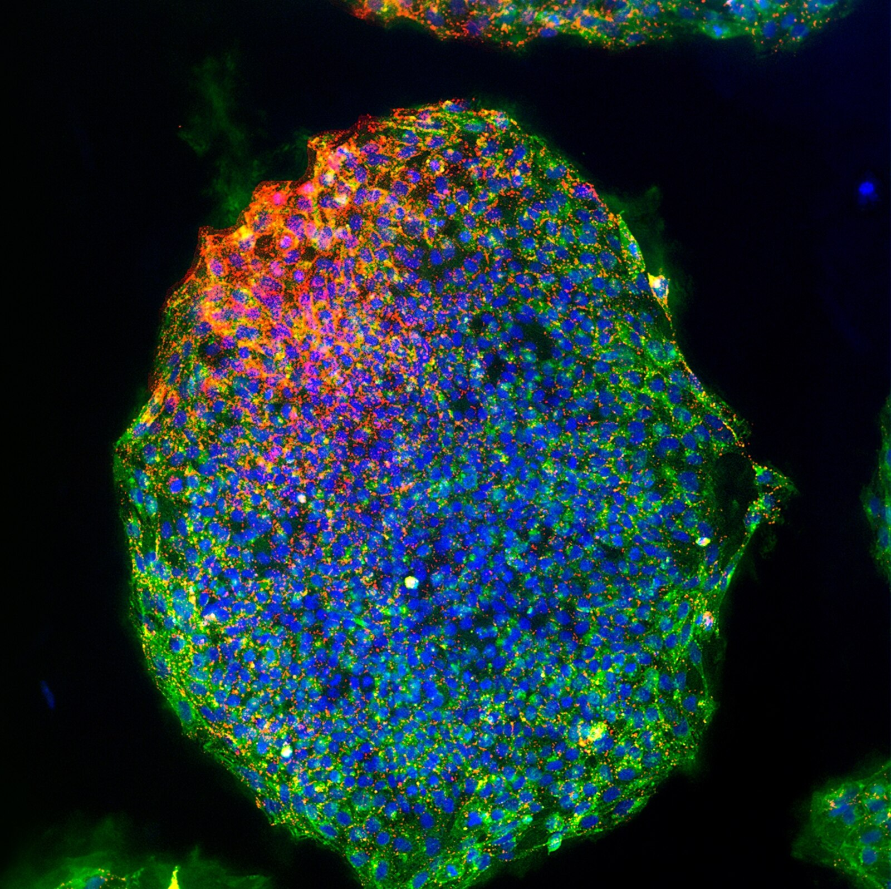
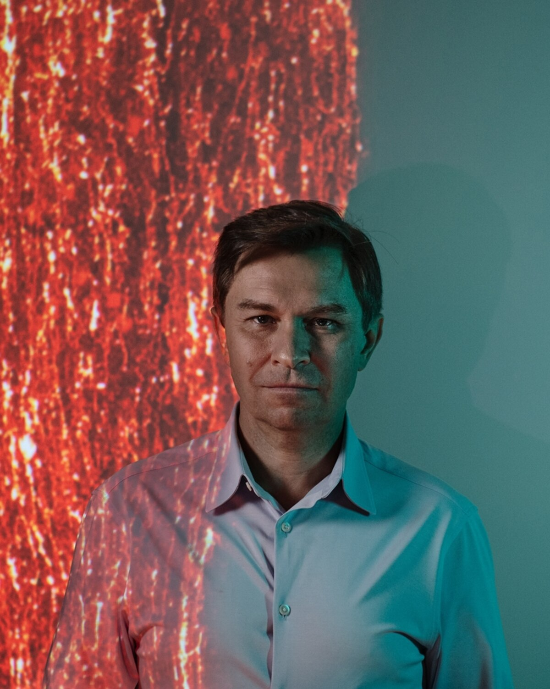
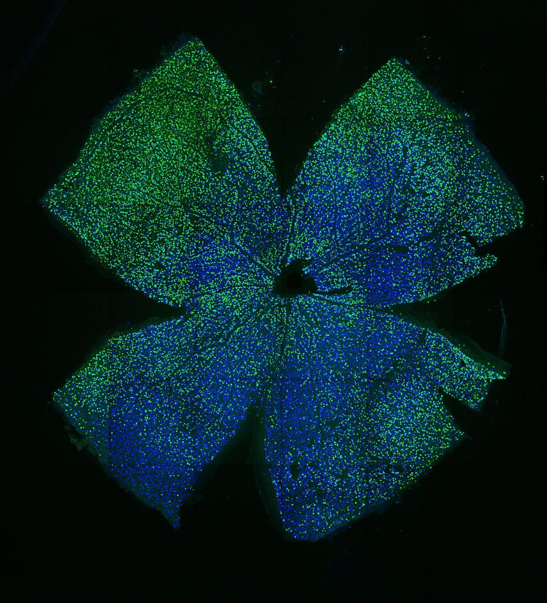
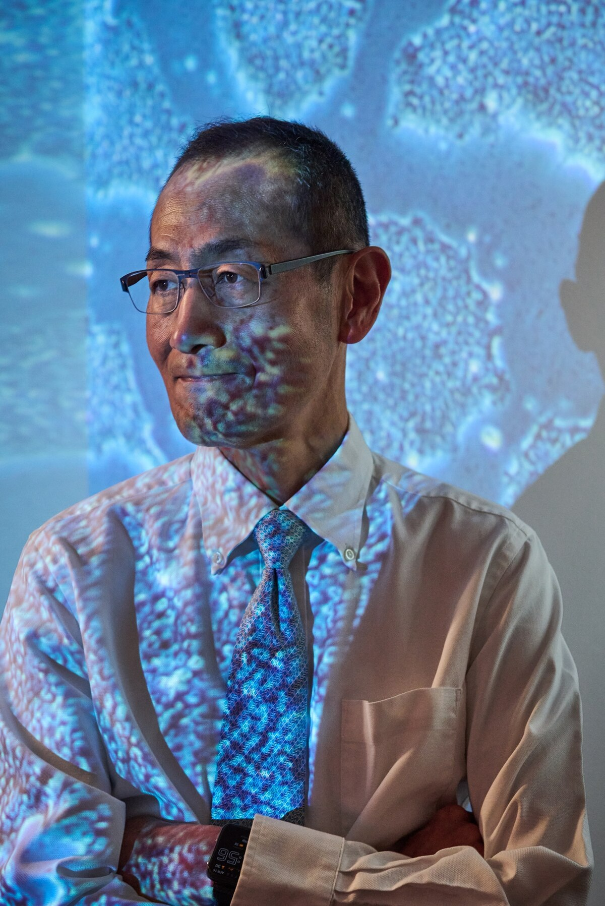

האם אנחנו על סף סופה של ההזדקנות?
באפריל הוזרק לעינו של אדם חומר שמעולם לא נוסה בבני אדם. המטרה המיידית היא לתקן עצב ראייה פגוע. המטרה האמיתית גדולה בהרבה: להחזיר תאים לאחור בזמן, ולהפוך את ההזדקנות מתהליך בלתי נמנע למצב רפואי שאפשר לטפל בו.

זריקה אחת לעין, הימור על עתיד האדם
בחדר בדיקות רגיל בגלנדייל, קליפורניה, צפה הביולוג המולקולרי דייוויד סינקלייר ברופא עיניים מזריק כמות זעירה של ER-100 לעינו השמאלית של גבר בשנות השבעים לחייו. האיש סבל במשך עשרות שנים מגלאוקומה מתקדמת. הוא עבר כמה ניתוחים שנועדו להאט את המחלה, אך נותר עם כמחצית משדה הראייה שלו ונזק מתמשך לעצב הראייה.
גלאוקומה אינה רק בעיית לחץ תוך־עיני. היא מחלה ניוונית שפוגעת בתאי הגנגליון של הרשתית ובסיבים שמחברים את העין למוח. הטיפולים הקיימים מסוגלים בדרך כלל להפחית גורמי סיכון ולעכב הידרדרות. הם אינם מחזירים לחיים תאי עצב שכבר נפגעו. ER-100 מנסה לעשות בדיוק את זה: לא להחליף את התא ולא לעקוף אותו, אלא לשכנע אותו לחזור למצב תפקודי צעיר יותר.
העין היא נקודת פתיחה אסטרטגית. היא חלל תחום, נגיש להזרקה ולמדידה, ובעל מאפיינים חיסוניים שמפחיתים חלק מהסיכון לדלקת מערכתית. כפי שסינקלייר הסביר לכתבה, רגולטורים אוהבים מרחבים סגורים מבחינת בטיחות. הצלחה בעין לא תוכיח שאפשר להצעיר גוף שלם, אבל היא יכולה להראות לראשונה שתכנות אפיגנטי מחדש מסוגל לתקן עצב פגוע בתוך אדם חי.

מה בדיוק בודק הניסוי?
לפי הרישום הרשמי NCT07290244, זהו ניסוי פתוח, לא אקראי, במינון יחיד ובמספר קטן של משתתפים. ההערכה הנוכחית היא ל־18 מטופלים בגילי 40 עד 85: תחילה אנשים עם גלאוקומה בזווית פתוחה במינונים עולים, ובהמשך אנשים עם NAION, פגיעה פתאומית בעצב הראייה שנגרמת מחוסר אספקת דם.
- מטרה ראשית: לבדוק בטיחות, סבילות ותופעות לוואי, כולל רעילות שמגבילה את המינון.
- מתן הטיפול: זריקה לזגוגית של עין אחת באמצעות וקטור AAV מהונדס.
- הפעלה מבוקרת: נטילת דוקסיציקלין במשך שמונה שבועות כדי להדליק את ביטוי גורמי OSK.
- מדידות נוספות: חדות ראייה, שדה ראייה, רגישות לניגודיות, לחץ תוך־עיני, הדמיית OCT ותפקוד תאי הרשתית.
- משך המעקב: תאריך הסיום המלא המוערך הוא 2032, בגלל מעקב ארוך אחר בטיחות טיפול גנטי.
איך מחזירים תא לאחור בזמן?
לכל תא בגוף יש אותו DNA כמעט בדיוק, אבל תא עור מתנהג אחרת מתא עצב משום שקבוצות שונות של גנים מופעלות ומושתקות. מעל רצף ה־DNA יושבת שכבת בקרה, האפיגנום, שכוללת בין השאר קבוצות מתיל וחלבונים שמארגנים את הכרומטין. השכבה הזאת היא כמו מערכת הרשאות והגדרות: היא אינה משנה את הקוד עצמו, אך קובעת אילו חלקים ממנו ייקראו ומתי.
במהלך החיים מצטברים באפיגנום שיבושים. קרינה, רעלים, עישון, דלקת, מתח ונזקי שכפול משאירים עקבות. תאים מתחילים להפעיל תוכניות לא נכונות, מאבדים גמישות ותפקוד, ומתקשים לתקן את עצמם. סינקלייר מציע לחשוב על כך כשריטות על דיסק: המידע המקורי עדיין נמצא שם, אך מערכת הקריאה כבר אינה מצליחה לגשת אליו היטב.
ER-100 משתמש בשלושה גורמי תעתוק המכונים יחד OSK: OCT4, SOX2 ו־KLF4. אלה חלבונים המסוגלים לשנות את דפוסי הפעלת הגנים ולהסיר חלק מסימני הגיל האפיגנטיים. הווקטור הנגיפי אינו אמור לשכתב את רצף הגנים הקיים של המטופל; הוא מעביר הוראות זמניות לייצור החלבונים. דוקסיציקלין משמש מתג הפעלה, כך שהחוקרים יכולים להגביל את משך הביטוי.

מרוץ המיליארדים נגד ההזדקנות
הזריקה בגלנדייל היא נקודה אחת במרוץ ביוטכנולוגי עצום, ממומן ומלא שאיפות. ב־2013 הקים לארי פייג׳ מגוגל את Calico Labs. אחריו הגיעו NewLimit, שנוסדה בתמיכת בריאן ארמסטרונג מ־Coinbase; Retro Biosciences, שקיבלה השקעה מסם אלטמן; ו־Altos Labs, שקמה עם כשלושה מיליארד דולר, לפי דיווחים גם מכספו של ג׳ף בזוס. Altos נחשבת לאחת מחברות הביולוגיה הצעירות הממומנות אי פעם.
הרטוריקה השתנתה. בתחילת הגל דיברו בגלוי על מוות כבעיה הנדסית ועל אנשים שיחיו אלף שנה. היום החברות מדגישות בעיקר healthspan, מספר השנים שאדם חי בבריאות טובה, וטיפול במחלות קונקרטיות. אבל מאחורי השפה הזהירה עומדת אותה הנחת יסוד: אם המחלות הגדולות של הזקנה נובעות ממנגנונים משותפים, טיפול במנגנון עצמו עשוי לעכב או להפוך כמה מהן בבת אחת.
הדחיפות הדמוגרפית אמיתית. עד 2050 מספר בני ה־80 ומעלה בעולם צפוי להתקרב לחצי מיליארד. חיים ארוכים יותר אינם בהכרח חיים טובים יותר: חולשה, דמנציה, אובדן ראייה ושמיעה, נפילות ואובדן עצמאות ממלאים לעיתים את העשורים האחרונים. לכן השאלה אינה רק אם אפשר להוסיף שנים, אלא אם אפשר לדחוס את תקופת החולי לסוף קצר יותר של החיים.
מיאמנקה ועד ER-100
החיפוש אחר מעיין הנעורים עתיק, אך הביולוגיה המודרנית הפכה אותו לסדרה של שאלות מדידות. ניסויי חיבור מחזורי דם בין חולדות צעירות וזקנות הראו כבר במאה ה־19 שסביבה צעירה יכולה להשפיע על גוף זקן. בשנות השישים התברר שלתאים רגילים יש גבול חלוקה, המכונה גבול הייפליק. ב־1993 הראתה סינתיה קניון ששינוי בגן יחיד יכול להאריך את חיי התולעת C. elegans בכ־50 אחוז.
הפריצה המכרעת הגיעה ב־2005. שיניה יאמנקה ניסה לפתור מחסור בתאי גזע עובריים וגילה שארבעה גורמי תעתוק יכולים להחזיר תא בוגר למצב כמעט עוברי. הגורמים, OCT4, SOX2, KLF4 ו־c-MYC, נקראו לימים ״גורמי יאמנקה״, והעבודה זיכתה אותו בפרס נובל ב־2012.

הבעיה הייתה שעוצמת התהליך דומה יותר לאקונומיקה מאשר לחומר ניקוי עדין. החזרה מלאה למצב פלוריפוטנטי עלולה למחוק את זהות התא ולהוביל לגידולים. חואן קרלוס איספיסואה בלמונטה, כיום מדען מייסד ב־Altos Labs, הראה שאפשר להפעיל את הגורמים במחזורים מבוקרים. בעכברים עם פרוגריה, תסמונת הזדקנות מואצת, טיפול כזה האריך את החיים בכ־30 אחוז ושיפר החלמה מפציעות.
סינקלייר ועמיתו יואנצ׳נג ריאן לו הלכו במסלול אחר. הם הסירו את c-MYC, הגורם המזוהה ביותר עם צמיחה וסיכון סרטני, ועבדו עם שלישיית OSK. תחילה ניסו אותה באורגנואידים, אחר כך בעיני עכברים ולבסוף בפרימטים. במאמר משנת 2020 דיווחו על שחזור תפקוד הראייה בעכברים עם נזק לעצב הראייה. החברה אומרת שנראו תוצאות מעודדות גם בפרימטים, אך הנתונים המלאים האלה טרם פורסמו.
למה מדענים רבים עדיין ספקנים
הזדקנות אינה מתג יחיד. היא קשורה לדלקת כרונית, נזק גנומי, קיצור טלומרים, תפקוד מיטוכונדריאלי, הצטברות תאים סנסנטיים, שינויי תקשורת בין תאים ועוד. גוף האדם מכיל עשרות טריליוני תאים מכ־200 סוגים. מנגנון שעובד בתא גנגליון של הרשתית לא בהכרח יהיה בטוח בכבד, בלב או במוח.
אפילו כאשר מדד אפיגנטי נראה צעיר יותר, אין ודאות שהרקמה באמת נעשתה צעירה ובריאה יותר. ייתכן שהשינוי משקף תגובה זמנית לסביבה, לא תיקון יסודי. ניסויים בבעלי חיים אינם מבטיחים הצלחה בבני אדם, והיסטוריית הרפואה מלאה בטיפולים מרשימים בעכברים שנכשלו בקליניקה.
הסיכון הגדול הוא אובדן שליטה. טיפול שמגיע ליותר מדי תאים, פועל זמן רב מדי או יוצר צמיחה לא נכונה עלול לגרום נזק חמור. ג׳וני קים ממכון TRON הזהיר שניסיון לתכנת מחדש איבר גדול כמו הלב עלול להשפיע על רקמות שכנות ולהספיק כדי להפוך תאים לסרטניים.
גם יאמנקה מדגיש שתכנות אפיגנטי כנראה לא יהיה פתרון יחיד. הזדקנות מושפעת גם מנזקי DNA, מיטוכונדריה וסביבת הרקמה, ולכן טיפול עתידי עשוי לשלב כמה גישות. בלמונטה עצמו חוקר מנגנון שהוא מכנה ״סחיפה מזנכימלית״, מעבר הדרגתי של תאים מיוחדים לדפוסים דמויי פיברובלסט שתורמים לתיקון פצעים אך מפחיתים תפקוד רקמתי. לשיטתו, ייתכן שזהו מנגנון־על שמקשר בין סימני הזדקנות רבים.
סינקלייר לא מסתפק בעין
בתעשייה שמעדיפה כיום שפה זהירה, סינקלייר ממשיך לדבר בגדול. אחרי גלאוקומה הוא מצביע על אובדן שמיעה ומחלות כבד. לאחר מכן מגיע הפרס האמיתי: לא טיפול במחלה אחת אלא טיפול במנגנון ההזדקנות. הוא מקווה לראות בתוך עשרים שנה תרופות שיחזירו לאחור ״היבטים של הזדקנות״, ואולי טיפול שיקומי לכל הגוף.
הוא גם טוען שהטכנולוגיה כבר התקדמה מעבר ל־ER-100. במעבדתו מפותח טיפול בשם SL-100, קוקטייל כימי ולא ריפוי גנטי, שלדבריו אמור לחקות את פעולת גורמי התעתוק ולהינתן כגלולה. סינקלייר אומר שהצוות בדק אותו בעכברים וברקמות מוח, כליה, שריר, נוירונים מוטוריים וכבד, אך אלה טענות מוקדמות, קנייניות בחלקן, שעדיין אינן תחליף לפרסום מדעי מלא ולניסוי מבוקר בבני אדם.
חזון הגלולה חשוב משום שטיפול גנטי דרך AAV קשה להפצה בכל הגוף ואינו הפיך בקלות. מולקולות קטנות שנלקחות דרך הפה יכולות להיות זולות יותר, נשלטות יותר וניתנות להפסקה. מצד שני, ככל שהטיפול מערכתי יותר, כך גם הסיכון רחב יותר. תוצאה בטוחה בעין אחת אינה רשיון להצעיר גוף שלם.
במקביל מחפשת מעבדתו של סינקלייר את מה שהוא מכנה ״הצופה״: המנגנון שבו תא שומר גיבוי של מצבו הצעיר. אחרי ההפריה העובר מוחק חלק גדול מהמידע האפיגנטי שהגיע מההורים, ובכל זאת יוצר גוף תקין. סינקלייר משער שקיימת בתא מערכת ששומרת את ההוראות הדרושות לשחזור. הצוות השתמש ב־AI כדי לסרוק מיליארדי תרכובות ומנסה לזהות אם הזיכרון הזה מקודד בחלבון, ב־DNA, בחומצת גרעין אחרת או במנגנון שעדיין לא הובן.
אם נצליח, למי יהיו עוד חמישים שנה?
מדע ההצערה מתקדם בעיקר בחברות פרטיות. זה מאפשר מהירות וכסף, אך גם סודיות. תוצאות שליליות, ספקות ומגבלות אינם תמיד נחשפים בזמן. בניגוד לאוניברסיטה, חברה אינה מחויבת להראות למתחרים מה היא יודעת. כך נוצר תחום שבו טיפולים מוקדמים מפותחים בזמן שהמדע הבסיסי עצמו עדיין מתגבש.
והשאלות החברתיות עצומות: מה יקרה אם רק עשירים יוכלו לקנות עשרות שנות חיים בריאות? מה יקרה לדורות צעירים אם בעלי הון וכוח יישארו בתפקידיהם מאה שנה? כיצד ישתנו פנסיה, ירושה, דיור, ילודה, תעסוקה ומשאבי טבע? האם הארכת חיים תקטין סבל או רק תעמיק אי־שוויון?
יאמנקה אמר ל־National Geographic שהארכת חיים משמעותית עשויה לגעת בקיום האנושי ובערכים אפילו עמוק יותר מ־AI, משום שהיא נוגעת ישירות במאזן החברתי, בחיים ובמוות. הוא קורא לדיון ציבורי רחב לפני שהטכנולוגיה תתקדם הרבה יותר. כרגע, השיחה מפגרת אחרי הכסף והמעבדות.
ארבע דרכים נוספות לעקוף את הזקנה
1. דם צעיר ודילול פלזמה
ניסויי פרביוזה, שבהם חיברו מחזורי דם של חיה צעירה וזקנה, הראו השפעות התחדשות בחיה המבוגרת. גרסה קלינית יותר היא דילול פלזמה: מוציאים פלזמה ישנה, שעשויה להכיל חלבונים מעודדי דלקת, ומחליפים אותה בתמיסת מלח ובאלבומין. עדיין לא ברור אם הדבר מאט הזדקנות בבני אדם, וה־FDA הזהיר מפני שירותים מסחריים שמקדימים את הראיות.
2. תרופות נגד ״תאי זומבי״
תאים סנסנטיים מפסיקים להתחלק אך אינם מתים, ומפרישים אותות דלקתיים שפוגעים ברקמה. תרופות סנוליטיות מנסות לחסל אותם. בעכברים נצפו הארכת חיים ושיפור בתפקוד שריר, כליה ולב, אך ניסויים בבני אדם טרם הניבו פריצת דרך. כמה חברות גייסו סכומים גדולים ונכשלו, בעוד מחקרים חדשים ממשיכים לבדוק תרופות קיימות ותרכובות ייעודיות.
3. רפמיצין
רפמיצין התגלה בחיידקי קרקע מרפה נוי ואושר ב־1999 לדיכוי מערכת החיסון לאחר השתלות. הוא מעכב את מסלול mTOR הקשור לגדילת תאים והאריך חיים בעכברים, תולעים, זבובים ושמרים. קהילת אריכות הימים משתמשת בו לעיתים מחוץ להתוויה, אך התוצאות האנושיות אינן חד־משמעיות ותופעות הלוואי כוללות כיבים בפה, עליית כולסטרול ודיכוי חיסוני.
4. איברים חדשים
אפשרות אחרת היא לא להצעיר איבר אלא להחליף אותו. חוקרים מפתחים איברים שגודלו במעבדה ואיברי חזיר מהונדסים. עד כה הישרדות לאחר השתלות קסנו מוגבלת, אך הטכנולוגיה מתקדמת. בקצה הקיצוני מופיעים כבר רעיונות מפוקפקים מוסרית על גידול גופים או שיבוטים כמחסני חלקי חילוף. הם מדגישים עד כמה מהר המדע יכול לעקוף את השיחה האתית.
אז האם אנחנו באמת על סף סוף ההזדקנות?
עוד לא. יש כעת אדם שקיבל טיפול שנועד להחזיר תאי עצב למצב צעיר יותר. זהו רגע היסטורי, אבל עדיין רק תחילתו של ניסוי בטיחות קטן. לא פורסמו תוצאות קליניות שמראות ש־ER-100 שיפר ראייה, ובוודאי לא שהאריך חיים.
החדשות החשובות אינן שהמוות נפתר. הן שהזדקנות עברה ממיתוס פילוסופי לבעיה ניסויית: אפשר למדוד גיל אפיגנטי, לשנות אותו, לתקן תפקוד בבעלי חיים ולבדוק את המנגנון בבני אדם. אם ER-100 יהיה בטוח, הוא יפתח דלת. אם גם ישקם עצב ראייה, הוא עשוי לשנות את הרפואה. ואם יום אחד תימצא דרך לעשות זאת בכל הגוף בלי סרטן, בלי אובדן זהות ובלי להעמיק אי־שוויון, נצטרך להחליט לא רק כמה זמן אפשר לחיות, אלא איזה עולם נרצה לבנות עבור החיים הארוכים האלה.